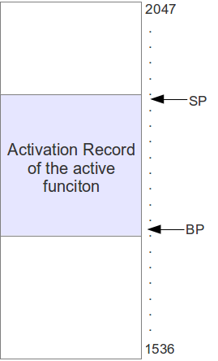
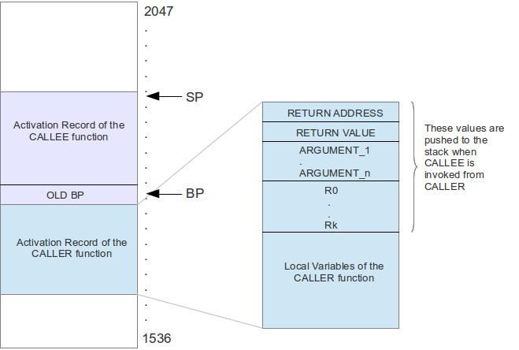
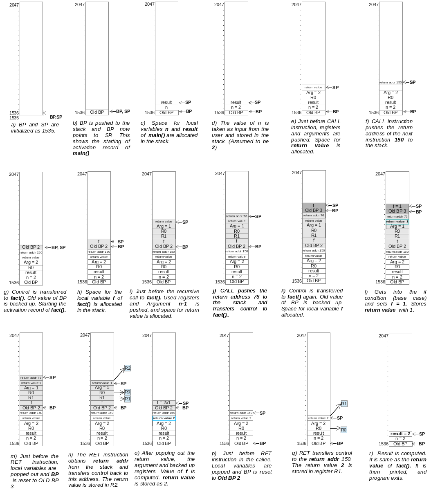

Function Calls
A function call or a subroutine invocation is done by the machine instruction CALL (see subroutine instructions in XSM). The stack is used to pass arguments to the function and get back the return value. Stack is necessary for a programming language that supports recursion. This will be explained in detail, later in this page. Note that APL is a language that supports recursion. The stack of the user process stores information about the active subroutines of the program. An active subroutine is one that has been called but is yet to complete execution. Control should be handed back to the point of call after completing the function execution.
The activation record corresponding to an active subroutine (or the active function) is shown below. The bottom position of the activation record is pointed to by the BP, and the top of the stack is by SP. The region between BP an SP within the stack is the activation record of the active function. See the figure below.

(NOTE In XOS, stack grows from a lower memory address to a higher memory address. )
The stack contents when a function call is made is shown in the figure below

A: Actions when a CALLER function invokes a CALLEE function
- The user registers and arguments are pushed into the stack. (See figure). The registers are pushed to backup its values. The CALLEE can now freely use these registers. Arguments are the inputs to the CALLEE function to perform its actions. The arguments become accessible to the CALLEE from the stack.
- An empty space for the return value is pushed into the stack, specified as RETURN VALUE in the above figure. The CALLEE function will store the return value in this space after it is computed. The CALLER will access this return value from the stack after return from the CALLEE.
- The CALL instruction will push the address of IP into the stack, specified as RETURN ADDRESS . This is because the CALL instruction changes IP to the address of the CALLEE's starting instruction. After the CALLEE performs its actions it must return back to the point after the function call. Hence the current IP must be backed up
APL generates instructions for doing steps 1 and 2. It also generates the machine instruction CALL which does step 3.
B: Actions upon entry into the CALLEE function
The CALL instruction passes control to the starting instruction of the CALLEE function. The first few instructions generated by APL compiler for the CALLEE function does the following actions
Push the current value of BP to the stack. The base of the activation record of the current function is identified by BP. When the CALLEE function is invoked, BP needs to be changed to the base of activation record of the CALLEE function. Hence, the old value of BP corresponding to the CALLER function must be backed up in the stack so that it can be recovered when control returns back to the CALLER function after completion of CALLEE.
BP is changed to the value of SP. This is because, the activation record of the CALLEE starts at this point. The CALLEE is the current function and BP must point to the starting point of its activation record. As long as the CALLEE function does not call another function, or does not return back to the CALLER, BP will not change. The region in the stack above this BP till SP will be its activation record. As SP can change during execution, the activation record also varies during execution of the function.
C: Internal stack operations by the CALLEE function
The local variables declared in the CALLEE program has to be allocated memory. This is done in the stack. Each local variable will be allocated a word in the stack. The Stack Pointer will be updated accordingly. APL compiler will generate machine instructions to do this, when local variables are declared. During runtime of the CALLEE, this space may be modified when local variables are assigned values. The region between SP and BP is known as the activation record of the CALLEE function.
D: Actions in the CALLEE function during return
Upon completion, the CALLEE function must return back to the CALLER. This is done using the APL statement, return; which translates to the RET machine instruciton. The steps done are given below in detail:
- The function stores the return value computed in the RETURN VALUE field of the activation record of the CALLER function.
- All the local variables of the function are popped from the stack as they are no longer required.
- OLD BP is popped out from the stack. BP is set to OLD BP. .
- Then the RET instruction is generated by the APL. The RET instruction sets the IP to the value on top of the stack. Now the top of the stack points to the top of the activation record of the CALLER function. This value, specified as RETURN ADDRESS was pushed by the CALL instruction. When IP is set to this value, it passes control to the instruction after the CALL instruction (that invoked the CALLEE) in the CALLER function.
E: Actions in the CALLER function after return
- The CALLER function obtains the return value from the stack and stores it in a register. It pops out the arguments in its activation record and they are discarded. It also restores the backed up register values, so that the execution of CALLER can resume. Machine instructions to perform the above actions will follow the CALL instruction (which invoked the CALLEE) in the machine code generated by the APL compiler.
An example of translating a recursive program to computing the factorial of the number is shown below
decl
integer fact(integer n); // Declaration of fact() function
enddecl
integer fact(integer n) // Definition of recursive function fact()
{
integer f; // Local variable of fact()
if(n==1) then // Checking base case of recursion
f=1;
else
f=n*fact(n-1); // Recursive call to fact(n-1)
endif;
return f; // Value of f is returned to the CALLER function
}
integer main()
{
integer n,result; // Local variables of main()
read(n); // Input is obtained from the user
result=fact(n); // Factorial of 'n' is stored in 'result'
print(result); // The value of 'result' is printed
return 0; // Return from main()
}
0: START
2: MOV SP, 1535 // Initialize SP to 1535 (Before Logical Page Number 3)
4: MOV BP, 1535 // Initialize BP to 1535 (Before Logical Page Number 3)
6: JMP 00110 // Jumps to the main() function (word address 110)
// fact() function definition starts here
8: PUSH BP // Old value of BP is pushed
10: MOV BP, SP // BP is changed to SP
12: PUSH R0 // Allocating space for local variable 'f
14: MOV R0, -3 // Argument 1 is obtained at 3rd position below BP.
16: MOV R1, BP // ... it takes more than one XSM instruction
18: ADD R0, R1 // ... to achieve an action
20: MOV R0, [R0] // ...
22: MOV R1, 1 // Checking if condition and branching
24: EQ R0, R1 // ...
26: JZ R0, 00040 // Jumps to 'else' part if condition is false
28: MOV R0, 1 // 'if' condition actions
30: MOV R1, BP // ...
32: ADD R0, R1 // ...
34: MOV R1, 1 // ...
36: MOV [R0], R1 // ...
38: JMP 00088 // Skip 'else' part
40: MOV R0, 1 // 'else ' condition actions begins here
42: MOV R1, BP // ...
44: ADD R0, R1 // ...
46: MOV R1, -3 // ...
48: MOV R2, BP // ...
50: ADD R1, R2 // ...
52: MOV R1, [R1] // ...
54: PUSH R1 // ... Backing up registers (only R1, R0 used)
56: PUSH R0 // ... ...
58: MOV R0, -3 // ... Calculating argument 'n-1' for recursive call
60: MOV R1, BP // ... ...
62: ADD R0, R1 // ... ...
64: MOV R0, [R0] // ... ...
66: MOV R1, 1 // ... ...
68: SUB R0, R1 // ... ...
70: PUSH R0 // ... Push argument 'n-1' to stack
72: PUSH R0 // ... Push a space for return value before function call
74: CALL 8 // ... Recursive call to fact(). jumps to address 8
// The following code is executed after return from fact()
76: POP R2 // ... Popping out the RETURN VALUE from the stack
78: POP R3 // ... Popping out the arguments from the stack
80: POP R0 // ... Popping out the backed up registers from the stack
82: POP R1 // ... ...
84: MUL R1, R2 // ... Computing 'f'
86: MOV [R0], R1 // ...
88: MOV R0, 1 // Obtaining the value of 'f'
90: MOV R1, BP // ...
92: ADD R0, R1 // ...
94: MOV R0, [R0] // ...
96: MOV R1, -2 // Storing the return value at BP - 2
98: MOV R2, BP // ...
100: ADD R1, R2 // ...
102: MOV [R1], R0 // ...
104: POP R0 // Popping out local variable
106: POP BP // Popping out OLDBP to BP
108: RET // Return from the function fact()
// main() starts here
110: PUSH BP // Old value of BP is pushed
112: MOV BP,SP // BP is changed to SP
114: PUSH R0 // Allocating space for local variable 'n'
116: PUSH R0 // Allocating space for local variable 'result'
118: MOV R0, 1 // Computing location of 'n' in the stack (BP + 1)
120: MOV R1, BP // ...
122: ADD R0, R1 // ...
124: IN R1 // Reading 'n' from user
126: MOV [R0], R1 // Saving the value of 'n' to the stack
128: MOV R0, 2 // Computing location of 'result' in the stack (BP + 2)
130: MOV R1, BP // ...
132: ADD R0, R1 // ...
134: PUSH R0 // Backing up registers for function call
136: MOV R0, 1 // Computing arguments for function call
138: MOV R1, BP // ...
140: ADD R0, R1 // ...
142: MOV R0, [R0] // ...
144: PUSH R0 // Pushing arguments to stack
146: PUSH R0 // Allocating space for RETURN VALUE
148: CALL 8 // Function call to fact(), jumps to address 8
// The following code is executed after return from fact()
150: POP R1 // Popping out the RETURN VALUE from the stack
152: POP R2 // Popping out the arguments from the stack
154: POP R0 // Popping out backed up registers
156: MOV [R0], R1 // Saving the return value in 'result'
158: MOV R0, 2 // Getting value of 'result'
160: MOV R1, BP // ...
162: ADD R0, R1 // ...
164: MOV R0, [R0] // ...
166: OUT R0 // Printing 'result'
168: MOV R0, 10 // Preparing for exiting
170: PUSH R0 // ...
172: INT 7 // ...
When the above program is run with value of 'n' as 2 taken from input, the following will be the condition of stack

System Calls
System calls are like built in functions in APL. When APL translates a system call, it generates an INT instruction, which transfers control to an interrupt service routine that contains the system call implementation. The interrupt routine runs in superuser mode. Read about various system calls available in APL.
(NOTE: This page describes how a system call in a user program is translated by the APL compiler. The actions done by the system call (within the corresponding interrupt routine) is to be programmed in SPL, by the XOS programmer.)
There are three steps in executing a system call. Invoking the system call, performing the system call and returning from the system call. The instructions to do the first and last steps are generated by APL. This page describes how APL does these steps.
Invoking a system call
An user process invokes a system call by first pushing the arguments and system call number into the stack and then invoking the INT machine instruction corresponding to the system call. A system call in APL compiles to the a set of machine instructions like the one shown below.
PUSH Argument_1 // Push arguments to the stack
.
.
PUSH Argument_n
PUSH R0 // Push an empty space for RETURN VALUE
PUSH System_Call_No // Push system call number
INT number // Invoke the corresponding INT instruction
(NOTE: The machine code above is in the form of pseudo code.)

a) Shows the stack operations performed by the user program before INT instruction (See machine instructions above) . The arguments are pushed to stack in an order such that last argument comes on top. A push instruction PUSH R0 is done to put an empty space in the stack for the return value. The system call implementation must ensure that the return value is stored in this space. The system call number is pushed to the stack. The interrupt routine needs this value to identify the system call.
b) Shows the contents of the stack after the INT instruction is executed. The INT instruction will push the value of IP + 2 on to the stack. This value is the address of the instruction after the INT instruction in the user program. Each instruction is 2 words, hence IP is incremented by 2. This IP value will be used by interrupt routine to return back from the system call to the next instruction in the calling program. The INT instruction changes mode from USER to KERNEL mode and passes control to the Interrupt Routine corresponding to the system call.
After return from the system call.
The interrupt routine instruction transfers control back to the user program to the instruction following the INT instruction. The following machine instructions are present after the INT instruction in the APL compiled machine code given in the previous step.
POP System Call Number // Pop and discard system call number
POP RETURN_VALUE // Pop and save the return value
POP Argument_n // Pop and discard arguments
.
.
POP Argument_1
(NOTE: The machine code above is in the form of pseudo code. )
The machine code above pops the values from the stack. The system call number and arguments were inputs to the system call and hence they may be discarded now. The return value which is stored in the stack by the system call is fetched and used by the user program.
Open
Description: The Open system call is used to open a file present in the XFS disk.
System Call No: 2
Interrupt Routine No: 2
Arguments: filename of the file to be opened
Return Value: Index of open instance in Per-Process Open File table (Success) or -1 (Failure)
// APL program to invoke Open
integer main()
{
integer a;
a = Open("File");
return 0;
}
// Compiled XSM machine code
START
MOV SP, 1535 // Initializes SP to 1535
MOV BP, 1535 // Initializes BP to 1535
JMP 00008 // Jump to main() function
// main() function
//================
PUSH BP
MOV BP,SP
PUSH R0 // Space for 'a' in stack
MOV R0, 1
MOV R1, BP
ADD R0, R1 // address of 'a' is in R0
// preparing stack for system call
MOV R1, "File" // Pushing argument filename
PUSH R1 // ...
PUSH R0 // Pushing space for RETURN VALUE
MOV R1, 2 // Pushing system call number = 2
PUSH R1 // ...
// invoking interrupt routine
INT 2 // Transfers control to interrupt 2
// actions after interrupt routine returns
POP R2 // Pop out system call number
POP R1 // Pop out return value
POP R2 // Pop out the argument
MOV [R0], R1 // Saving the return value in 'a'
MOV R0, 10 // Preparing for exit system call
PUSH R0 // ...
INT 7 // Invoking interrupt 7 (exit)
Write
Description: Used to write a single word to a file opened by the process
System Call No: 5
Interrupt Routine No: 4
Arguments: 1. fileDescriptor, 2. wordToWrite
Return Value: 0 (Success) or -1 (Failure)
// APL program to invoke Write
integer main()
{
integer a;
a = Write(0,a);
return 0;
}
// Compiled XSM machine code
START
MOV SP, 1535 // Initializes SP to 1535
MOV BP, 1535 // Initializes BP to 1535
JMP 00008 // Jump to main() function
// main() function
//================
PUSH BP
MOV BP,SP
PUSH R0 // Space for 'a' in stack
MOV R0, 1
MOV R1, BP
ADD R0, R1 // address of 'a' is in R0
// Preparing for system calls
MOV R1, 0 // Pushing argument 0
PUSH R1 // ...
MOV R1, 1 // Pushing argument a
MOV R2, BP // ...
ADD R1, R2 // ...
MOV R1, [R1] // ...
PUSH R1 // ...
PUSH R0 // Pushing space for RETURN VALUE
MOV R1, 5 // Pushing system call number = 5
PUSH R1 // ...
// invoking interrupt routine
INT 4 // Transfers control to interrupt 4
// actions after interrupt routine returns
POP R2 // Pop out system call number
POP R1 // Pop out return value
POP R2 // Pop out arguments
POP R2 // ...
MOV [R0], R1 // Store the return value in 'a'
MOV R0, 10 // Preparing for exit system call
PUSH R0 // ...
INT 7 // Invoking interrupt 7 (exit)
Seek
Description: Changes the LSEEK position
System Call No: 6
Interrupt Routine No: 3
Arguments: 1. fileDescriptor 2. newLseek
Return Value: 0 (Success) or -1 (Failure)
// APL program to invoke Seek
integer main()
{
integer a;
a = Seek(0,10);
return 0;
}
// Compiled XSM machine code
START
MOV SP, 1535 // Initializes SP to 1535
MOV BP, 1535 // Initializes BP to 1535
JMP 00008 // Jump to main() function
// main() function
//================
PUSH BP
MOV BP,SP
PUSH R0 // Space for 'a' in stack
MOV R0, 1
MOV R1, BP
ADD R0, R1 // address of 'a' is in R0
// Preparing for system calls
MOV R1, 0 // Pushing argument 0
PUSH R1 // ...
MOV R1, 10 // Pushing argument 10
PUSH R1 // ...
PUSH R0 // Pushing space for RETURN VALUE
MOV R1, 6 // Pushing system call number = 6
PUSH R1 // ...
// invoking interrupt routine
INT 3 // Transfers control to interrupt 3
// actions after interrupt routine returns
POP R2 // Pop out system call number
POP R1 // Pop out return value
POP R2 // Pop out arguments
POP R2 // ...
MOV [R0], R1 // Store the return value in 'a'
MOV R0, 10 // Preparing for exit system call
PUSH R0 // ...
INT 7 // Invoking interrupt 7 (exit)
Read
Description: Reads a word from a file to the variable passed as argument.
System Call No: 7
Interrupt Routine No: 3
Arguments: 1) fileDescriptor 2) wordRead
Return Value: 0 (success) and -1 (failure)
// APL program to invoke Read
integer main()
{
integer a;
string b;
// Word read will be in b
// Assume fileDescriptor=0
a = Read(0,b);
return 0;
}
// Compiled XSM machine code
START
MOV SP, 1535 // Initializes SP to 1535
MOV BP, 1535 // Initializes BP to 1535
JMP 00008 // Jump to main() function
// main() function
//================
PUSH BP
MOV BP,SP
PUSH R0 // Space for 'a' in stack
PUSH R0 // Space for 'b' in stack
MOV R0, 1
MOV R1, BP
ADD R0, R1 // address of 'a' is in R0
// Preparing for system calls
MOV R1, 0 // Pushing argument 0
PUSH R1 // ...
MOV R1, 2 // Pushing argument b
MOV R2, BP // ...
ADD R1, R2 // ...
MOV R1, [R1] // ...
PUSH R1 // ...
PUSH R0 // Pushing space for RETURN VALUE
MOV R1, 7 // Pushing system call number = 5
PUSH R1 // ...
// invoking interrupt routine
INT 3 // Transfers control to interrupt 3
// actions after interrupt routine returns
POP R2 // Pop out system call number
MOV R1, 2 // Get the location on 'b'
MOV R2, BP // ...
ADD R1, R2 // ...
POP R2 // Pop out the RETURN VALUE
// Argument 'b' was passed as reference.
POP R3 // Pop and save argument to 'b'
MOV [R1], R3 // ...
MOV R1, R2 // Move return value from R2 to R1
POP R2 // Pop out argument 0
MOV [R0], R1 // Store the return value in 'a'
MOV R0, 10 // Preparing for exit system call
PUSH R0 // ...
INT 7 // Invoking interrupt 7 (exit)
Fork
Description: Replicates the process which invoked this system call in the memory.
System Call No: 8
Interrupt Routine No: 5
Arguments: None
Return Value: In the parent process, PID of the process created (success) or -1 (failure). In the child process, -2
// APL program to invoke Fork
integer main()
{
integer a;
a = Fork();
return 0;
}
// Compiled XSM machine code
START
MOV SP, 1535 // Initializes SP to 1535
MOV BP, 1535 // Initializes BP to 1535
JMP 00008 // Jump to main() function
// main() function
//================
PUSH BP
MOV BP,SP
PUSH R0 // Space for 'a' in stack
MOV R0, 1
MOV R1, BP
ADD R0, R1 // address of 'a' is in R0
// Preparing for system calls
PUSH R0 // Pushing space for RETURN VALUE
MOV R1, 8 // Pushing system call number = 5
PUSH R1 // ...
// invoking interrupt routine
INT 5 // Transfers control to interrupt 5
// actions after interrupt routine returns
POP R2 // Pop out system call number
POP R1 // Pop out the RETURN VALUE
MOV [R0], R1 // Store the return value in 'a'
MOV R0, 10 // Preparing for exit system call
PUSH R0 // ...
INT 7 // Invoking interrupt 7 (exit)